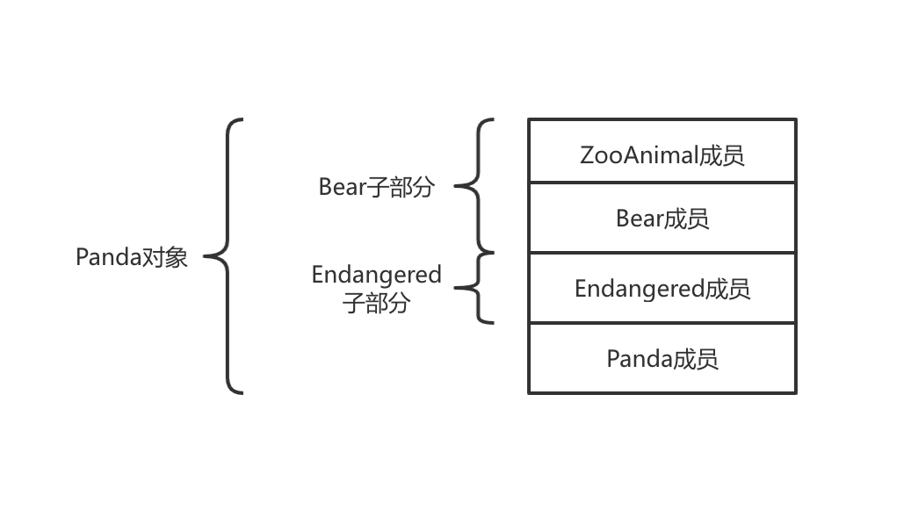
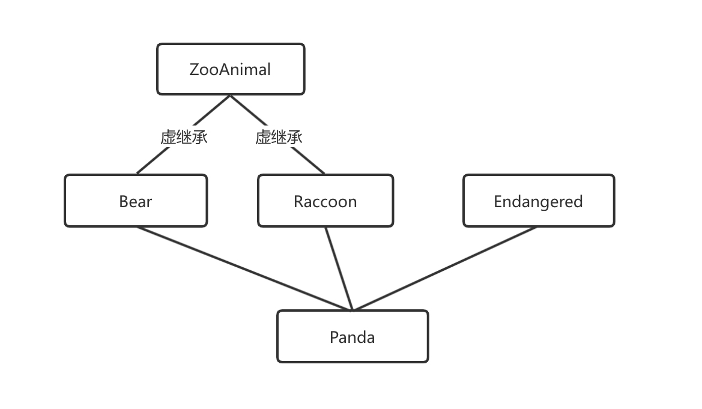

5.7 类的多重继承与虚继承¶
多重继承¶
编码规范：真正需要用到多重继承的情况少之又少，只有在以下情况下我们才允许多重继承：最多只有一个基类是非抽象类，其他基类都是以
Interface为后缀的纯接口类。接口是指满足如下特定条件的类，它们最好以
Interface为后缀：
只有纯虚函数（
=0）和静态函数（除了析构函数）没有非静态数据成员
没有定义任何构造函数，如果有也不能带参数，且必须为
protected如果它是一个子类，也只能从满足上述条件的并以
Interface为后缀的类继承
1. 简介¶
多重继承（multiple inheritance）是指从多个直接基类中产生派生类的能力，多重继承的派生类继承了所有父类的属性。
2. 实例¶
在派生类的派生列表中可以包含多个基类：
class Bear : public ZooAnimal { /*...*/ };
class Panda : public Bear, public Endangered { /*...*/ };
在多重继承关系中，派生类的对象包含每个基类的子对象。如下图所示，在Panda对象中含有一个Bear部分（其中又含有一个ZooAnimal部分）、一个Endangered部分以及在Panda中声明的非静态数据成员。

3. 派生类构造函数初始化所有基类¶
// 显式地初始化所有基类
Panda::Panda(std::string name, bool onExhibit)
: Bear(name, onExhibit, "Panda"),
Endangered(Endagered::critical) { }
// 隐式地使用Bear的默认构造函数初始化Bear子对象
Panda::Panda()
: Endangered(Endagered::critical) { }
其中基类的构造顺序与派生列表中基类的出现顺序保持一致，而与派生类构造函数初始值列表中基类的顺序无关。一个Panda对象按照如下次序进行初始化：
ZooAnimal：首先初始化ZooAnimal这个整个继承体系中的最终基类接下来初始化
Panda的第一个直接基类Bear初始化
Panda的第二个直接基类Endangered最后初始化
Panda
4. 继承的构造函数与多重继承¶
在C++11新标准中，允许派生类从它的一个或几个基类中继承构造函数。但是如果从多个基类中继承了相同的构造函数（即形参列表完全相同），则程序会出错：
struct Base1 {
Base1() = default;
Base1(const std::string&);
Base1(std::shared_ptr<int>);
};
struct Base2 {
Base2() = default;
Base2(const std::string&);
Base2(int);
};
// 错误: D1试图从两个基类中都继承D1::D1(const string&)
struct D1: public Base1, public Base2 {
using Base1::Base1; // 从Base1继承构造函数
using Base2::Base2; // 从Base2继承构造函数
// 补救方法: 如果一个类从它的多个基类中继承了相同的构造函数, 则这个类必须为该构造函数定义它自己的版本
D1(const string &s) : Base1(s), Base2(s) { }
D1() = default; // D1一旦定义了它自己的构造函数, 则不会合成默认构造函数
};
5. 析构函数与多重继承¶
派生类的析构函数只负责清除派生类本身分配的资源，派生类的成员以及基类都是自动销毁的，合成的析构函数体为空。析构函数的调用顺序正好与构造函数相反，在上面的例子中析构函数的调用函数是：
~Panda ~Endangered ~Bear ~ZooAnimal
6. 多重继承的派生类的拷贝与移动操作¶
与只有一个基类的继承一样，多重继承的派生类如果定义了自己的拷贝/赋值构造函数和赋值运算符，则必须在完整的对象上执行拷贝、移动或赋值操作。
Tips：只有当派生类使用的是合成版本的拷贝、移动或赋值成员时，才会自动对其基类部分执行这些操作。在合成的拷贝控制成员中，每个基类分别使用自己对应成员隐式地完成构造、赋值或销毁等工作。
比如Panda合成版本的拷贝构造函数：
Panda会首先调用Bear的拷贝构造函数，后者又会在执行自己的拷贝任务之前先调用ZooAnimal的拷贝构造函数Bear部分构造完成就会调用Endangered的拷贝构造函数创建对象对应的部分最后执行
Panda的拷贝构造函数
合成的移动构造函数工作机理与合成的拷贝构造函数类似。合成的拷贝赋值运算符首先赋值Bear部分（并且通过Bear赋值ZooAnimal部分），然后赋值Endangered部分，最后是Panda部分。移动赋值运算符的工作机理与之类似。
7. 类型转换与多个基类¶
Tips：在只有一个基类的情况下，派生类的指针或者引用能自动转换成一个可访问基类的指针或者引用，多个基类的情况也与之类似。
在上面的例子中，我们令某个可访问基类的指针或引用直接指向一个派生类对象，例如一个ZooAnimal、Bear或Endangered类型的指针或引用可以绑定到Panda对象上：
// 接收Panda基类引用的一系列操作
void print(const Bear&);
void highlight(const Endangered&);
ostream& operator<<(ostream&, const ZooAnimal&);
Panda ying_yang("ying_yang");
print(ying_yang); // 把一个Panda对象传递给一个Bear的引用
highlight(ying_yang); // 把一个Panda对象传递给一个Endangered的引用
cout << ying_yang << endl; // 把一个Panda对象传递给一个ZooAnimal的引用
注意编译器不会在派生类向基类的几种转换中进行比较和选择，因为在它看来转换到任意一种基类都一样好。要注意避免二义性错误：
void print(const Bear&);
void print(const Endangered&);
Panda ying_yang("ying_yang");
print(ying_yang); // 二义性操作, print函数需要带上前缀限定符
与只有一个基类的继承一样，对象、指针和引用的静态类型决定了我们能够使用哪些成员。举个例子，比如我们在不同类中定义了如下的虚函数：
| 函数 | 含有自定义版本的类 |
|---|---|
| ZooAnimal::ZooAnimal Bear::Bear Endangered::Endangered Panda::Panda |
|
| highlight | Endangered::Endangered Panda::Panda |
| toes | Bear::Bear Panda::Panda |
| cuddle | Panda::Panda |
| 析构函数 | ZooAnimal::ZooAnimal Endangered::Endangered |
考虑一下如下调用：
Bear *pb = new Panda("ying_yang");
pb->print(); // 正确: Panda::print()
pb->cuddle(); // 错误: 不属于Bear的接口
pb->highlignt(); // 错误: 不属于Bear的接口
delete pb; // 正确: Panda::~Panda()
当我们通过Endangered的指针或者引用访问一个Panda对象时，Panda接口中Panda特有的部分以及属于Bear部分是不可见的：
Endangered *pe = new Panda("ying_yang");
pe->print(); // 正确: Panda::print()
pe->toes(); // 错误: 不属于Endangered的接口
pe->cuddle(); // 错误: 不属于Endangered的接口
pe->highlignt(); // 正确: Panda::highlight()
delete pb; // 正确: Panda::~Panda()
8. 多重继承下的类作用域¶
在只有一个基类的情况下，派生类的作用域嵌套在直接基类和间接基类的作用域中。查找过程沿着继承体系自底向上进行，直到找到所需的名字。派生类的名字将隐藏基类的同名成员。
在多重继承的情况下，相同的查找过程在所有直接基类中同时进行，如果名字在多个基类中都被找到，则对该名字的使用将具有二义性。对于一个派生类而言，从它的几个基类中分别继承名字相同的成员是完全合法的，只不过在使用这个名字时必须明确指出它的版本。当一个类具有多个基类时，有可能出现派生类从两个或者多个基类中继承了同名成员的情况。此时不加前缀限定符直接使用该名字将引发二义性。
举个例子，如果ZooAnimal和Endangered都定义了max_weight的成员，并且Panda没有定义该成员，那么下面的调用是错误的：
// Panda对象、指针或引用使用了某个名字, 则程序会并行在Endangered和Bear/ZooAnimal两棵子树中查找该名字
// 如果名字在超过一棵子树中被找到, 则该名字的使用具有二义性错误
double d = ying_yang.max_weight();
如果每次调用max_weight时都指出所调用的版本，也可以避免二义性错误：
ZooAnimal::max_weight
Endangered::max_weight
要想避免潜在的二义性，最好的办法是在派生类中为该函数定义一个新版本。例如：
double Panda::max_weight() const {
return std::max(ZooAnimal::max_weight(),
Endangered::max_weight());
}
虚继承¶
1. 简介¶
尽管在派生类列表中同一个基类只能出现一次，但实际上派生类可以多次继承同一个类：
派生类可以通过它的两个直接基类分别继承同一个间接基类
直接继承某个基类，然后通过另一个基类再一次间接继承该类
在默认情况下，派生类含有继承链上每个类对应的子部分。如果某个类在派生过程中出现了多次，则派生类中将包含该类的多个子对象。
举个例子，IO标准库的
istream和ostream分别继承了一个名为base_ios的抽象基类，派生类包含基类多个子对象的情况对于形如iostream的类显然是行不通的。一个iostream对象肯定希望在同一个缓冲区中进行读写操作，也会要求条件状态能同时反映输入和输出操作的情况。假如iostream对象中真的包含base_ios的两份拷贝，则上述的共享行为就无法实现了。
在C++中我们通过虚继承的机制解决问题。虚继承的目的是令某个类作出声明，承诺愿意共享它的基类。这种机制下，无论虚基类在继承体系中出现了多少次，在派生类中都只包含唯一一个共享的虚基类子对象。
2. 实例：另一个Panda类¶
我们令Panda类同时继承Bear和Raccoon。为了避免赋予Panda两份ZooAnimal子对象，我们将Bear和Raccoon继承ZooAnimal的方式改成虚继承。新的继承体系如下图：

Tips：虚派生只影响从指定了虚基类的派生类中进一步派生出的类，它不会影响派生类本身。
我们指定虚基类的方式是在派生列表中添加关键字virtual：
// 关键字public和virtual的顺序随意
class Raccoon : public virtual ZooAnimal { /*...*/ };
class Bear : virtual public ZooAnimal { /*...*/ };
如果某个类指定了虚基类，则该类的派生仍然按常规方式进行：
class Panda : public Bear,
public Raccoon, public Endangered {
};
3. 支持向基类的常规类型转换¶
不论基类是不是虚基类，派生类对象都能被可访问基类的指针或引用操作。例如下面这些从Panda向基类的类型转换都是合法的：
void dance(const Bear&);
void rummage(const Raccoon&);
ostream& operator<<(ostream&, const ZooAnimal&);
Panda ying_yang;
dance(ying_yang); // 正确: 把一个Panda对象当成Bear传递
rummage(ying_yang); // 正确: 把一个Panda对象当成Raccoon传递
cout << ying_yang; // 正确: 把一个Panda对象当成ZooAnimal传递
4. 构造函数与虚继承¶
在虚派生中，虚基类是由最底层的派生类初始化的。以我们的程序为例，当创建Panda对象时，由Panda的构造函数独自控制ZooAnimal的初始化过程。在此例中，虚基类将会在多条继承路径上被重复初始化。以ZooAnimal为例，如果应用普通规则，则Raccoon和Bear都会试图初始化Panda对象的ZooAnimal部分。
当然，继承体系中的每个类都可能在某个时刻成为“最底层的派生类”。只要我们能创建虚基类的派生类对象，该派生类的构造函数就必须初始化它的虚基类。假如在我们继承体系中，当创建一个Bear或者Raccoon的对象时，它就已经位于派生的最底层，因为Bear或Raccoon的构造函数将直接初始化器ZooAnimal基类部分：
Bear::Bear(std::string name, bool onExhibit) :
ZooAnimal(name, onExhibit, "Bear") { }
Raccoon::Raccoon(std::string name, bool onExhibit) :
ZooAnimal(name, onExihibit, "Raccoon") { }
而当创建一个Panda对象时，Panda位于派生的最底层并由它负责初始化共享的ZooAnimal基类部分。即使ZooAnimal不是Panda的直接基类，Panda的构造函数也可以初始化ZooAnimal：
Panda::Panda(std::string name, bool onExihibit)
: ZooAnimal(name, onExihibit, "Panda"),
Bear(name, onExihibit),
Raccoon(name, onExihibit),
Endangered(Endangered::critical),
sleeping_flag(false) { }
5. 虚继承的对象的构造方式¶
当我们创建一个Panda对象时，初始化顺序：
使用
Panda的构造函数初始值列表中提供的初始值构造虚基类ZooAnimal部分接下来构造
Bear部分然后构造
Raccoon部分构造第三个直接基类
Endangered最后构造
Panda部分
如果Panda没有显式地初始化ZooAnimal基类，则ZooAnimal的默认构造函数会被调用。如果ZooAnimal没有默认构造函数，那么代码将发生错误。
Tips：虚基类总是先于非虚基类构造，与它们在继承体系中的次序和位置无关。
6. 构造函数与析构函数的次序¶
一个类可以有很多虚基类，这些虚的子对象按照它们在派生列表中出现的顺序从左往右依次构造。例如：
class Bear : virtual public ZooAnimal { /*...*/ };
class Character { /*...*/ };
class BookCharacter : public Character { /*...*/ };
class ToyAnimal { /*...*/ };
class TeddyBear : Public BookCharacter,
Public Bear, public vritual ToyAnimal
{ /*...*/ };
编译器按照直接基类的声明顺序对其依次进行检查，以确定其中是否含有虚基类。如果有则先构造虚基类，然后按照声明的顺序逐一构造其他非虚基类。因此，想要创建一个TeddyBear对象时会按照如下次序调用构造函数：
ZooAnimal(); // Bear的虚基类
ToyAnimal(); // 直接虚基类
Character(); // 第一个非虚基类的间接基类
BookCharacter(); // 第一个直接非虚基类
Bear(); // 第二个直接非虚基类
TeddyBear(); // 最底层的派生类
合成的拷贝和移动构造函数按照完全相同的顺序执行，合成的赋值运算符中的成员也按照该顺序赋值。和往常一样，对象的销毁顺序和构造顺序正好相反，首先销毁TeddyBear部分，最后销毁ZooAnimal部分。